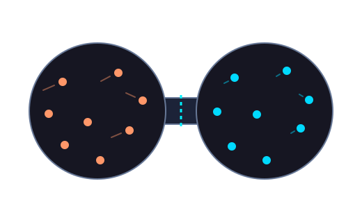

Physics · Thermal motion
Temperature, in motion.
Explore how particle motion gives rise to temperature. Set two gases to different temperatures, open the connection, and watch them exchange energy.
Launch simulation